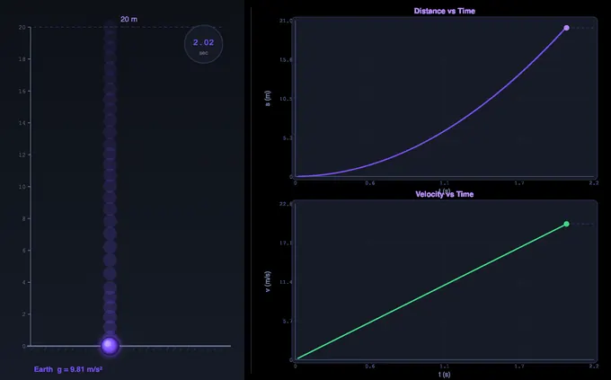
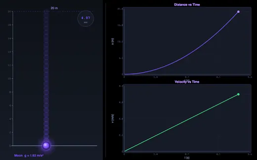
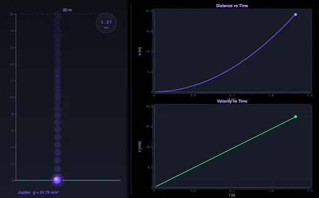

Free Fall Simulator
3D Model — Free Fall Simulator
Interactive free fall simulator — drop objects under gravity, compare g on Earth, Moon, Mars, and Jupiter. Visualize s = ½gt² and v = gt in real time. Try it free!
Gravitational Acceleration • Kinematics • Terminal Velocity — Simulate • Explore • Practice • Quiz
Display Controls
Σ Live equations — values substituted from current state
💡 What-if coach — insights from current values
1 Overview
This free free fall simulator lets you drop virtual objects under gravitational acceleration g = 9.81 m/s² and observe the kinematics equations in action. The interactive canvas displays the falling object with a real-time height vs time graph, while readout cards show height, distance fallen, velocity, time, g value, and planet. You can compare gravity on Earth, Moon, Mars, and Jupiter, toggle air resistance to observe terminal velocity, and drop two balls simultaneously to verify that mass does not affect free fall in a vacuum.
The tool demonstrates the core free fall equations — s = ½gt², v = gt, v² = 2gs, and t = √(2h/g) — with animated visual proof. Designed for physics and engineering students studying kinematics and gravitational mechanics.
2 Setting the Scene
The simulator opens in Simulate mode on Earth with a default drop height of 20 m. The canvas shows the ball at the top of the drop tower with the ground below. Six readout cards display Height, Distance Fallen, Velocity, Time, g, and Planet.
Use the Mode pills to switch between Simulate, Explore, Practice, and Quiz. The Planet pills switch between Earth, Moon, Mars, Jupiter, and a Custom g option. Toggle checkboxes enable Air Resistance and a Two Balls comparison mode.
3 Running the Demo
Set the Drop Height (1 m up to 10 km) using the slider — it is log-scaled, so the common 1–100 m range occupies the first half and you can still reach 10,000 m at the top; type an exact value in the box for precision. Select a planet to set the gravitational acceleration, or use the Custom option to enter any g value (0.5–30 m/s²). Press Drop to release the ball.
Playback speed: a 10 km drop takes ~45 s in real time (longer with air resistance), so the Speed control time-compresses tall drops. Leave it on Auto (it sizes the drop to a few seconds and shows the chosen factor, e.g. “Auto → 10×”) or pick a fixed 1×–25×. The stopwatch and all readouts always show true physical time, and an on-canvas “▶ N× time” badge marks when compression is active.
The ball accelerates downward and the readout cards update in real time: velocity increases linearly with time (v = gt), and distance grows quadratically (s = ½gt²). The canvas graph plots both distance and velocity versus time.
Air Resistance: Toggle this on to see the ball reach terminal velocity — the speed at which drag force equals weight and acceleration drops to zero. The ball falls more slowly and takes longer to hit the ground.
Two Balls: Enable this to drop two balls of different sizes simultaneously. In vacuum (air resistance off), both hit the ground at the same time, replicating Galileo’s famous experiment. With air resistance on, the larger ball falls slightly faster due to its lower drag-to-weight ratio.
Press Reset to return the ball to the starting position.
4 Behind the Physics
Explore mode provides concept cards across four categories: Gravity Basics (what is g, variation with altitude and latitude), Kinematics (the four free fall equations, derivations), Free Fall (Galileo’s experiment, Apollo 15, terminal velocity), and Applications (drop towers, skydiving, parachute design). Each card includes a formula, canvas diagram, and worked numerical example.
Use this mode to understand the theory behind the simulation — why all objects fall at the same rate in vacuum, how air resistance creates terminal velocity, and how the kinematic equations are derived from constant acceleration.
5 Try a Problem
Practice mode generates unlimited random problems: calculate fall time from a given height, find the velocity at impact, determine the height from which an object was dropped given its impact speed, or compare fall times on different planets. Full step-by-step solutions are shown for incorrect answers.
Quiz mode presents 5 randomised questions per session, mixing conceptual items (e.g., what happens to a feather and hammer on the Moon) with numerical calculations. A detailed score breakdown is shown at the end.
6 Things to Notice
- Compare planets: Drop from the same height on Earth, Moon, and Jupiter to see how dramatically different g values affect fall time and impact velocity.
- Use Two Balls mode with air resistance off to prove that mass does not affect free fall in a vacuum — both balls hit the ground simultaneously.
- Toggle air resistance to see terminal velocity emerge: the velocity readout flattens as drag equals weight.
- Use Custom g to simulate free fall on any celestial body — try Venus (8.87 m/s²) or Pluto (0.62 m/s²).
- Check the formula row below the readouts to see all four kinematic equations at a glance.
- The simulator works offline once loaded — ideal for classroom demonstrations.
7 Units, Presets, Calculations & Shortcuts
Presets: One click loads a ready-made scenario — Classroom Drop (Earth, 20 m), Apollo 15 (Moon, two balls), Skydiver (100 m with air resistance), Bremen Drop Tower (100 m), Galileo Two Balls, and HALO Jump (a 10 km drop with air resistance — watch the velocity climb to terminal velocity and then hold flat). Adjusting any control afterwards de-highlights the preset.
Steppers: Each slider has a companion number box — type an exact Drop Height or Custom g value instead of dragging.
SI / Imperial units: Use the Units toggle to switch every length, velocity and acceleration readout between metric (m, m/s, m/s²) and Imperial (ft, ft/s, ft/s²). All physics is computed in SI internally; only the display converts.
Show Calculations: Press the Show Calculations button on the canvas to open a step-by-step derivation modal — fall time, impact velocity, the s = ½gt² check, and energy per kilogram, all rendered in classical math notation.
Learning panels: Below the controls, the collapsible Live equations panel substitutes your current height and g into every kinematic equation, and the What-if coach offers insights (planet comparison, the √2 height rule, terminal-velocity note). Use Expand all / Collapse all to manage them.
Show Equation / Show Grid: Toggles for the on-canvas rolling equation overlay and the graph grid lines.
Export: The action bar (and the right-click menu) provide CSV export of the full time-history (t, s, v) and PNG export of the canvas with a watermark — ideal for worksheets and study sheets.
Right-click menu: Right-click the canvas for quick actions — Drop, Reset, Copy impact velocity, Export CSV/PNG, and toggle the grid or canvas equation.
Keyboard shortcuts: In Simulate mode press Space to drop and R to reset. A short impact sound plays when a ball lands (procedurally generated, no downloads).
Understanding Free Fall and Gravitational Acceleration

Free fall is one of the most important concepts in classical mechanics. It describes the motion of an object falling solely under the influence of gravity, with no other forces acting on it. In the ideal case (a vacuum), all objects fall at the same rate regardless of their mass or shape. This remarkable insight, attributed to Galileo Galilei, overturned centuries of Aristotelian thinking and laid the foundation for Newtonian mechanics.
The acceleration due to gravity (denoted g) is approximately 9.81 m/s² at Earth's surface. This means a freely falling object increases its speed by 9.81 metres per second every second. This value varies slightly depending on altitude, latitude, and local geological conditions — from about 9.78 m/s² at the equator to 9.83 m/s² at the poles. On other celestial bodies, g differs dramatically: 1.62 m/s² on the Moon, 3.72 m/s² on Mars, and a crushing 24.79 m/s² on Jupiter.
The Kinematic Equations of Free Fall
For an object released from rest at height h, three key equations govern its motion. The distance fallen is given by s = ½gt², showing that displacement increases with the square of time — a parabolic relationship that proves the object is accelerating, not moving at constant speed. The instantaneous velocity at time t is v = gt, a linear relationship. Combining these gives the time-independent equation v² = 2gs, which relates velocity directly to distance fallen without needing to know the elapsed time. To find the total fall time from height h, rearrange the distance equation: t = √(2h/g).


Galileo's Experiment and the Universality of Free Fall
Galileo's famous thought experiment (and later physical experiments with inclined planes) demonstrated that in the absence of air resistance, a feather and a hammer fall at exactly the same rate. This was dramatically confirmed on the Moon during the Apollo 15 mission in 1971, when astronaut David Scott dropped a hammer and a falcon feather simultaneously — both hit the lunar surface at the same instant. This principle is fundamental to Einstein's equivalence principle and forms the basis of general relativity.
Air Resistance and Terminal Velocity
In the real world, air resistance (drag) opposes the motion of falling objects. The drag force increases with velocity until it equals the gravitational force, at which point the object reaches terminal velocity and stops accelerating. A skydiver reaches approximately 55 m/s (200 km/h) in the spread-eagle position, while a peregrine falcon can dive at over 90 m/s. Parachutes exploit this principle by increasing drag area to reduce terminal velocity to a safe landing speed of about 5 m/s.
Worked Example — Stone Dropped from 80 m
A stone is released from rest at the top of an 80 m cliff. Take g = 9.81 m/s² and ignore air drag for now.
| What you want | Equation | Working | Answer |
|---|---|---|---|
| Time to hit the ground | t = √(2h/g) | √(2×80/9.81) = √16.31 | 4.04 s |
| Velocity at impact | v = gt | 9.81 × 4.04 | 39.6 m/s (143 km/h) |
| Velocity at impact (cross-check) | v = √(2gh) | √(2×9.81×80) | 39.6 m/s ✓ |
| Distance fallen at t = 2 s | s = ½gt² | ½×9.81×4 | 19.6 m (only ¼ of the height — the stone is still accelerating) |
| Velocity at t = 2 s | v = gt | 9.81 × 2 | 19.6 m/s |
The last two rows are the most common exam trap: students assume the stone is half-way down at half the fall time. It is actually only 25% of the way down at half-time, because displacement grows with t² while velocity grows linearly with t. You can verify this in the simulator’s graph view — the s-vs-t curve is the parabola, the v-vs-t curve is the straight line.
When Free Fall Isn’t Free — Air Drag and Terminal Velocity
The kinematic equations above all assume vacuum. Drop a real object through real air and the drag force Fd = ½ρCdAv² opposes motion. When drag equals weight, acceleration is zero and velocity is constant — terminal velocity:
vt = √(2mg / ρCdA)
| Object | Approx. terminal velocity | Time to reach 99% of it |
|---|---|---|
| Skydiver, spread-eagle (m = 75 kg, A = 0.7 m², Cd ≈ 1.0) | ~55 m/s (200 km/h) | ~12 s — about 450 m of fall |
| Skydiver, head-down (smaller A, lower Cd) | ~90 m/s (320 km/h) | longer — less drag, more time to terminal |
| Raindrop, 2 mm radius | ~9 m/s | ~1 s — small mass / large surface, reaches vt in metres, not km |
| Steel ball bearing, 10 mm radius | ~85 m/s | tens of seconds — large mass dominates over drag |
| Open parachute (A ≈ 28 m²) | ~5 m/s | ~2 s after canopy opens |
Two practical points: (1) for fall heights below ~5 m the vacuum equations are accurate to within a few percent even in air — that is why textbook problems skip drag. (2) Above 50–100 m, drag matters a lot for low-mass / large-area objects (a sheet of paper, a feather, a parachute) but very little for dense compact objects (a steel sphere, a stone).
Apollo 15 — The Universality Check Done Live on the Moon
On 2 August 1971, Commander David Scott held a 1.32 kg geological hammer in his right hand and a 0.03 kg falcon feather in his left, in front of the live television camera on the lunar surface. He released both from the same height (~1.6 m). With no atmosphere, the two objects fell with identical acceleration (gMoon = 1.62 m/s²) and struck the regolith at the same instant. Predicted fall time t = √(2×1.6/1.62) = 1.41 s; the recorded video shows them landing within video-frame precision of each other.
The experiment was a public demonstration of an idea Galileo argued without ever being able to prove cleanly — in air, the lighter object always loses. The Moon’s vacuum removed the only remaining variable. Switch the simulator to Moon mode to reproduce Scott’s drop time numerically.
Gravity Isn’t Uniform — g Across the Earth and Solar System
| Location | g (m/s²) | Why |
|---|---|---|
| Equator, sea level | 9.780 | Centrifugal effect of Earth’s rotation reduces apparent g; the equatorial bulge moves you further from the centre |
| 45° latitude, sea level | 9.806 | The conventional standard value (g0) |
| Poles, sea level | 9.832 | No centrifugal reduction; closer to Earth’s centre |
| Top of Mount Everest (8849 m) | 9.764 | Further from Earth’s centre (1/r² falloff) |
| ISS orbit (400 km altitude) | 8.69 | The crew floats not because g is zero but because they are in continuous free-fall |
| Moon surface | 1.62 | Smaller mass, smaller radius |
| Mars surface | 3.72 | About 38% of Earth gravity |
| Jupiter (1-bar cloud tops) | 24.79 | Massive but gas, no solid surface |
For laboratory-grade work in metrology and gravimetry, local g is measured to 8 decimal places using a free-fall apparatus — the same vacuum-drop experiment shown in this simulator, but with a corner-cube reflector falling inside an evacuated chamber and a laser interferometer reading its position.
Selected References
- Halliday, Resnick & Walker — Fundamentals of Physics, 11th ed., Chapter 2 (Motion Along a Straight Line) and Chapter 13 (Gravitation).
- Stinner, A. (2002) — The Story of Force: from Aristotle to Einstein. Physics Education 37, 77.
- NASA Apollo 15 Press Kit and lunar-surface video archive, NASA Technical Reports Server.
- BIPM — The International System of Units (SI), 9th ed., for the conventional value gn = 9.80665 m/s².
Explore Related Simulators
If you found this free fall simulator helpful, explore our Refraction of Light simulator, Boyle's Law simulator, Charles's Law simulator, Thermal Expansion simulator, and Thermodynamics Cycles simulator, and the Collision & Momentum simulator for what a falling body does when it lands.